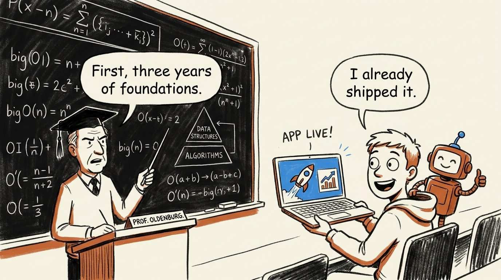
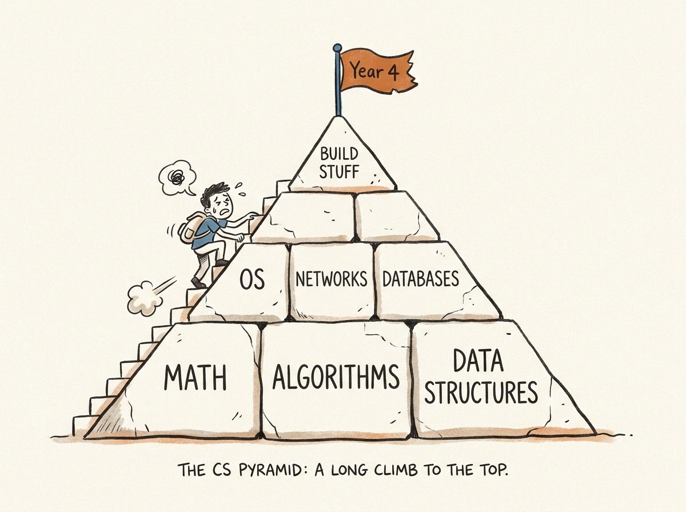
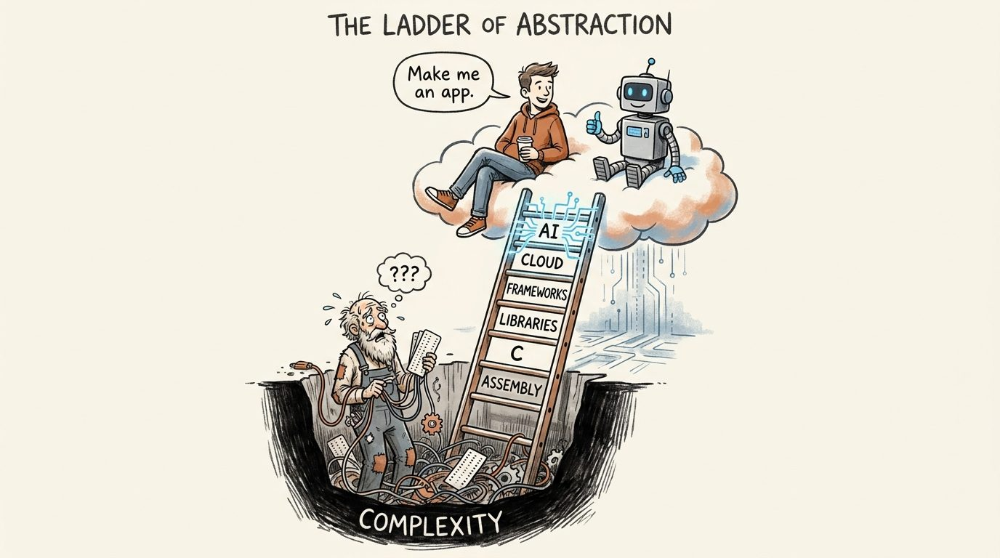
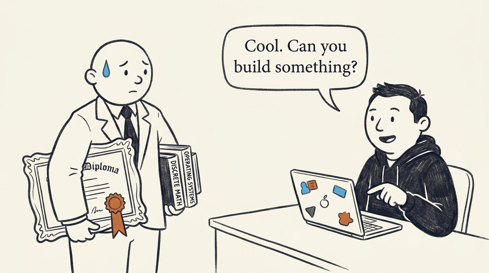
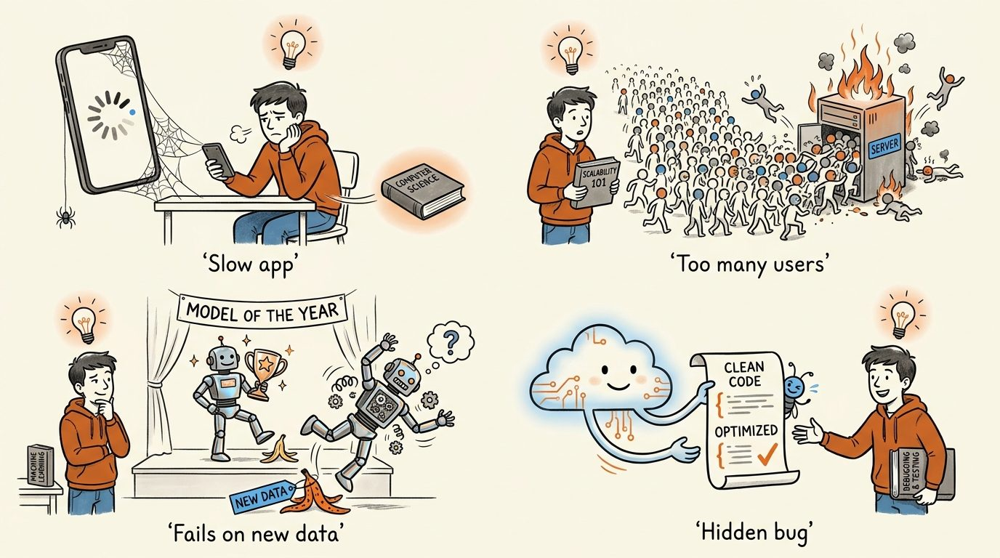
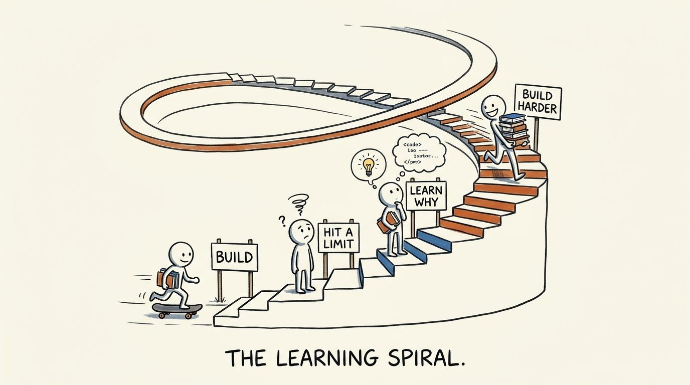

Are We Teaching Computer Science Backward?
We hand students the answers years before they meet the questions. AI just made that impossible to ignore.

Give a first-year student an AI assistant, Python, a few APIs, a database, and a cloud account. Within weeks, they can have something real running: an app with users, data, and a URL they can send to their friends. A few years ago, that took a lot more experience.
Then the same student walks into a lecture hall and hears the old message: learn the foundations first, and only then build something serious.
One of these two worlds is out of date. And it isn't the student's.
The pyramid we inherited
Computer science education is built like a pyramid. At the base: programming, mathematics, algorithms, data structures. Next level up: databases, operating systems, networks, software engineering. Practical technologies and specialized subjects sit near the top, reached only by those who climbed the rest.

For a long time this was the right design. Even simple software demanded serious technical knowledge. You had to understand a lot before you could build much.
The ground moved
For decades, we have been hiding complexity: better languages, then libraries, frameworks, cloud services, APIs, open source. AI is the next step on the same ladder, and a big one. More and more, you describe what you need instead of implementing every part yourself.

This does not mean we need less knowledge. It means the knowledge we need first has changed.
The interview question nobody trained you for
Look at entry-level job ads. Almost none ask for someone who "knows computer science." They ask for a front-end developer who works in React, a data engineer who builds pipelines, an AI engineer who can wire models, APIs, and data together.
A graduate may have mastered algorithms, operating systems, and discrete mathematics. The first interview can still come down to one blunt question:

"Can you actually build something with the tools we use?"
That is the mismatch. The job market starts with capability. The university starts with foundations. Graduates are left to bridge the gap on their own.
Teach the question before the answer
So let's experiment with a different order. Let students build useful things early. Teach them just enough modern tooling, APIs, databases, AI, testing, and deployment to ship real systems. Then let the problems they hit pull them into the deep material.
Watch what happens to the "boring" courses when they arrive at the right moment:

None of these subjects is abstract anymore. Each one is the answer to a problem the student already owns.
We teach students answers before they have met the questions.
The alternative is a loop: build something, hit a limit, understand why, learn what you need, build something harder.
Theory matters more, not less
This is not a case for dropping algorithms, mathematics, systems, or theory. As AI takes over routine implementation, those become more valuable. The hard problems stay: performance, scale, reliability, security, strange edge cases, and problems no library has solved yet. That is exactly where deep knowledge wins.
The real question is narrower and sharper: must all of it come first?
Perhaps a first-year student does not need a deep understanding of computer science before being allowed to build useful software. Perhaps building useful software is the best way to discover why deep computer science is worth learning.
Flip the order
The traditional path
The inverted path

That is not less computer science. It is computer science in the order you actually need it.
If you teach, hire, or recently graduated: which course would you move, and where? I would love to hear.